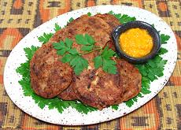

|
Cutlets of Meat & PotatoesTanzania, Zanzibar - Katlesi ya Nyama | ||||
| Makes: Effort: Sched: DoAhead: |
13 ea **** 2 hrs Most |
These fritters are more often made by street vendors or restaurants than in the home, as they are a bit of a production. I have broken this recipe into three stages, with clean-up between stages. | |||
| Read the Comments before starting. These are best served hot, but can be made ahead (see Reheating). Serve with chutney of your choice. | |||||
|
------- 10 3 1 1 ------ 1 3 1 2 1 1/4 1 ------- 1/2 2 ------- 1/2 ------- ar |
----- oz cl t t ----- # oz T T c t ----- c Xlrg ----- T ----- |
-- Cutlet Beef, Ground (1) Garlic Cumin Seed Pepper, black -- Potato mix Potatoes (2) Onions Serrano Chili (3) Cilantro Lime Juice Bread Crumbs Salt -- Coating Bread Crumbs Eggs ----------- Oil (4) -- Serve With Chutney, any -or- Hot Sauce |
Stage-1 Prep - (50 min 35 min work)
|